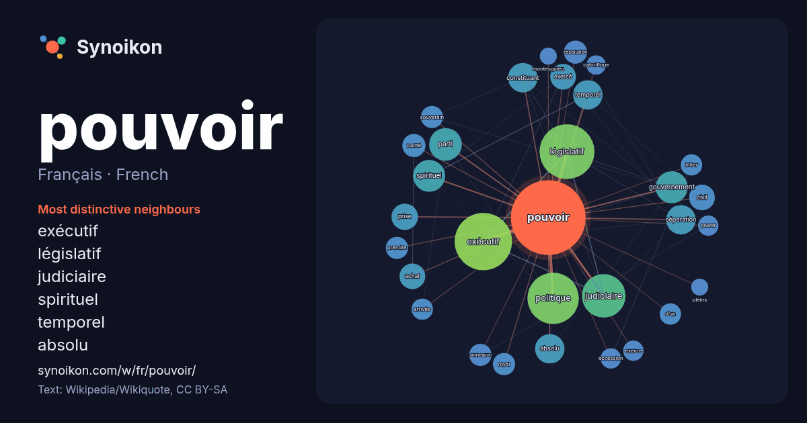

Français · French · popular word
pouvoir
“power” · The words found around it in 1366 instances from French Wikipedia, Wikiquote.

Most distinctive neighbours
- exécutif 71×
- législatif 68×
- judiciaire 38×
- spirituel 24×
- temporel 21×
- absolu 21×
- constituant 20×
- séparation 19×
- achat 17×
- exercé 16×
- politique 15×
- parité 14×
- civil 12×
- anneaux 12×
- résolution 12×
- d’un 12×
- prise 11×
- hitler 11×
- accession 11×
- souverain 11×
× = how many times more often than in general French Wikipedia text.
Most frequent neighbours
- exécutif 80
- législatif 73
- politique 64
- judiciaire 46
- parti 26
- gouvernement 25
- spirituel 25
- absolu 21
- constituant 21
- séparation 21
- temporel 21
- grand 19
- prise 17
- achat 16
- ans 16
- civil 16
- exercé 16
- militaire 16
- faire 15
- président 15
In context
- Wikimedia : pouvoir, sur le Wiktionnaire le pouvoir, en philosophie le pouvoir politique les pouvoirs publics, c'est-à-dire l'État le pouvoir, en sociologie Wikipedia snippets · Pouvoir
- correspondants. Le pouvoir exécutif (aussi appelé simplement l'exécutif) est l'un des trois pouvoirs, avec le pouvoir législatif et le pouvoir judiciaire, constituant Wikipedia snippets · Pouvoir exécutif
- Pour les articles homonymes, voir Pouvoir. En philosophie le pouvoir (qui vient du verbe pouvoir qui signifie « avoir la capacité » ou « avoir la possibilité » Wikipedia snippets · Pouvoir (philosophie)
- Le pouvoir constituant est le pouvoir qui crée ou révise une constitution. C'est l'organe bénéficiant de la compétence constitutionnelle. On le distingue Wikipedia snippets · Pouvoir constituant
- Pour les articles homonymes, voir Pouvoir et Résolution. Le pouvoir de résolution, ou pouvoir de séparation, pouvoir séparateur, résolution spatiale, résolution Wikipedia snippets · Pouvoir de résolution
- Bourdieu, notamment dans un article de 1977 intitulé « Sur le pouvoir symbolique », le pouvoir symbolique a une importance particulière dans les systèmes Wikipedia snippets · Pouvoir symbolique
- multiplier (Homme-multiple), celui de pouvoir renvoyer les coups, de voyager dans le temps (Hiro), le pouvoir de se régénérer (Piccolo) ou encore de Wikipedia snippets · Super-pouvoir
- Pour les articles homonymes, voir Pouvoir. Le contre-pouvoir (ou contrepouvoir) est un pouvoir qui s’organise face à une autorité établie. Ce peut être Wikipedia snippets · Contre-pouvoir
More French words
- art
- automne
- carte
- chanson
- chat
- chemin
- cheval
- chien
- climat
- cloche
- cœur
- dieu
- désert
- eau
- famille
- forêt
- histoire
- hiver
- horloge
- jardin
- langue
- miel
- miroir
- monnaie
- montagne
- mort
- mère
- nature
- nourriture
- ombre
- pain
- pluie
- pont
- printemps
- santé
- science
- sel
- silence
- temps
- tempête
- thé
- train
- travail
- trésor
- vie
- ville
- vérité
- étoile
- île
Precomputed on 2026-10-09 with default settings (±5 words, medium corpus). The interactive map can refresh it with live data.